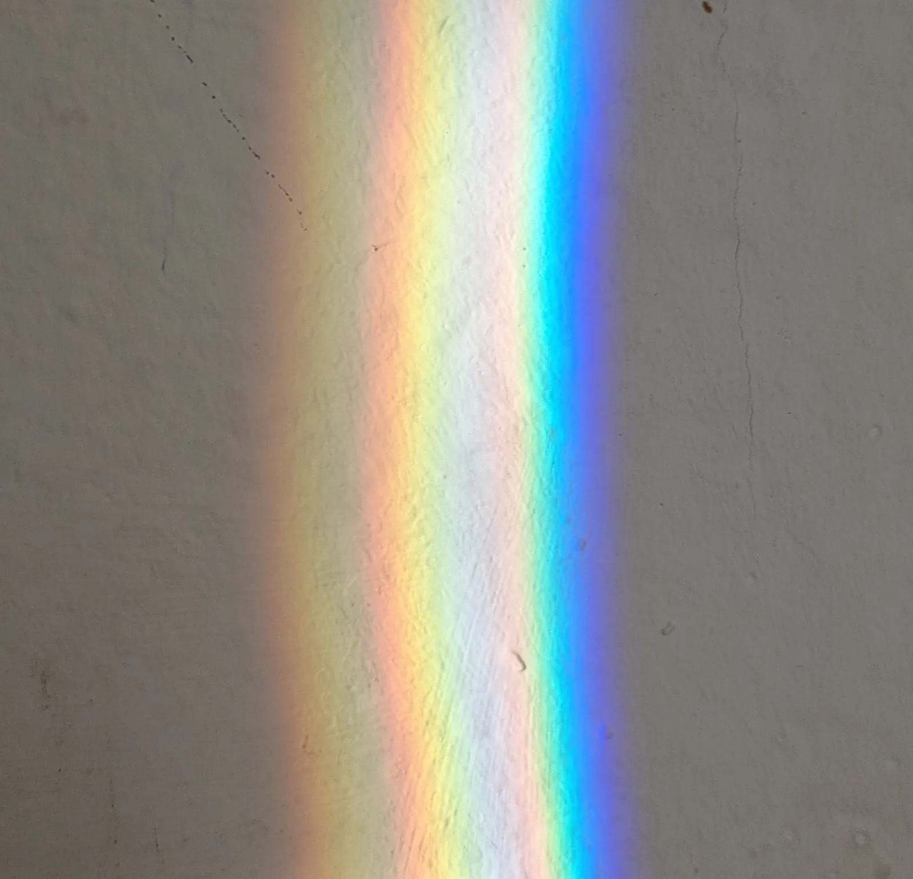

Dispersio: prisma ja sateenkaari
Miksi sateenkaaressa punainen on aina ulkoreunalla ja violetti sisäreunalla, ja miksi sateenkaaren näkee vain, kun aurinko on selän takana?
Pohjatiedot
- Valo taittuu rajapinnassa taittumislain $n_1 \sin\alpha_1 = n_2 \sin\alpha_2$ mukaan, ja $n = c : v$luku Valon heijastuminen ja taittuminen
- Näkyvän valon aallonpituudet ovat noin $400$–$700\,\text{nm}$, ja $c = f\lambda$luku Sähkömagneettinen säteily ja mustan kappaleen spektri
Ydinpolku: etene vaiheiden mukaan. Ydinpolkuun kuuluvat laskujen lisäksi tutkimukset, selitykset ja kuvaajat. Valinnainen-merkityt tehtävät tarjoavat lisäharjoittelua. Valinnaisia tehtäviä 4.
Pohdinta
Kesäsateen jälkeen taivaalla on sateenkaari. Sen ulkoreuna on punainen ja sisäreuna violetti, ja joskus sen ulkopuolella näkyy toinen, himmeämpi kaari. Samat värit näkyvät, kun aurinko paistaa lasiprisman tai kattokruunun kristallin läpi. Sadepisarat ja lasi ovat värittömiä, ja auringonvalo on valkoista.
Mistä sateenkaaren värit tulevat, ja miksi ne ovat aina samassa järjestyksessä?
Valinnainen Kertaa: taittuminen
Ennusta
Tee ennusteet ennen tutkimista 2 kysymystä
Ennuste 1: mikä väri poikkeaa eniten?
Ennuste 2: mistä sateenkaarta etsitään?
Tutki
Simulaatio
Käyttöohje
Säädä prisman huippukulmaa $A$ ja tulokulmaa $\alpha_1$, ja valitse aine. Valkoinen säde tulee vasemmalta, ja prismassa se hajoaa seitsemäksi värisäteeksi, jotka näyttävät päällekkäin valkoisilta. Oikealla olevaan varjostimeen osuu spektri. Katkoviivat ovat pintojen normaalit ja tulevan säteen jatke: värisäteen ja jatkeen välinen kulma on poikkeamakulma. Lukemat-riviltä näet punaisen ($656\,\text{nm}$) ja violetin ($405\,\text{nm}$) poikkeamakulmat, niiden eron ja taitekertoimet.
Mallin oletukset
Malli käsittelee valoa säteinä: kapea kimppu osuu prisman vasemman sivun keskelle, ja jokaisen värin suunta lasketaan taittumislaista $n_1 \sin\alpha_1 = n_2 \sin\alpha_2$ kummassakin pinnassa. Prisma on ilmassa, ja ilman taitekerroin on $1$. Taitekerroin saadaan aineen taulukkoarvoihin sovitetusta käyrästä: kruunulasin ja veden punaisen ja violetin arvot ovat luvun taulukon arvot. Pinnoista heijastuvaa osaa valosta ei piirretä. Jos väri ei pääse ulos toisesta pinnasta, sen säde piirretään heijastuneena takaisin lasiin. Lukemat ovat mallin laskemia arvoja, eivät mittauksia.
Laskennan selitys
Ensimmäisessä pinnassa $\sin\alpha_2 = \sin\alpha_1 : n$. Lasin sisällä $\alpha_3 = A - \alpha_2$, ja toisessa pinnassa $\sin\alpha_4 = n \sin\alpha_3$. Poikkeamakulma on
$$\delta = \alpha_1 + \alpha_4 - A$$
ja värien ero $\Delta\delta = \delta_\text{v} - \delta_\text{p}$. Jos $n \sin\alpha_3 > 1$, väri ei pääse ulos.
Kapea valkoisen valon kimppu osuu prismaan pimennetyssä huoneessa. Säädä huippukulmaa, tulokulmaa ja ainetta ja seuraa, kuinka paljon kukin väri poikkeaa.
Koe 1: huippukulma kasvaa
Testaa ennuste 1. Prisma on kruunulasia ja tulokulma $\alpha_1 = 50^\circ$; muuta vain huippukulmaa $A$. Kirjaa ainakin huippukulmat $30^\circ$, $40^\circ$, $50^\circ$, $60^\circ$ ja $70^\circ$. Vertaa punaisen ja violetin poikkeamakulmia ja niiden eroa.
Alkutila: huippukulma $A$ = $30^\circ$, tulokulma $\alpha _1$ = $50^\circ$, aine: kruunulasi. Vakiona: tulokulma $\alpha _1$, aine. Muutetaan: huippukulma $A$.
| huippukulma $A$ | punaisen poikkeama $(^\circ)$ | violetin poikkeama $(^\circ)$ | ero $(^\circ)$ |
|---|
Lisää tutkittavaa 2 tehtävää
Valinnainen Koe 2: tulokulma ja pienin poikkeama
Prisma on kruunulasia ja huippukulma $A = 60^\circ$; muuta vain tulokulmaa $\alpha_1$. Kirjaa ainakin tulokulmat $40^\circ$, $45^\circ$, $50^\circ$, $55^\circ$, $60^\circ$, $70^\circ$ ja $80^\circ$. Seuraa punaisen poikkeamakulmaa $\delta_\text{p}$.
Alkutila: huippukulma $A$ = $60^\circ$, tulokulma $\alpha _1$ = $40^\circ$, aine: kruunulasi. Vakiona: huippukulma $A$, aine. Muutetaan: tulokulma $\alpha _1$.
| tulokulma $\alpha _1$ | punaisen poikkeama $(^\circ)$ | violetin poikkeama $(^\circ)$ |
|---|
Johtopäätös: värit erkanevat
Kirjoita taulukkosi perusteella: mikä väri poikkeaa eniten ja mikä vähiten? Miten värien ero $\Delta\delta$ muuttuu, kun huippukulma kasvaa? Mistä erot johtuvat? Kokeile lopuksi vapaasti, kuinka suuri ero on flinttilasilla ja vedellä, kun $A = 60^\circ$ ja $\alpha_1 = 50^\circ$.
Mallivastaus
Violetti poikkeaa jokaisella huippukulmalla eniten ja punainen vähiten: esimerkiksi huippukulmalla $60^\circ$ poikkeamakulmat ovat $39{,}8^\circ$ ja $38{,}4^\circ$. Ero kasvaa huippukulman mukana: $30^\circ$:lla se on $0{,}53^\circ$, $60^\circ$:lla $1{,}40^\circ$ ja $70^\circ$:lla $4{,}4^\circ$. Erot johtuvat siitä, että lasin taitekerroin on violetille suurempi ($1{,}5302$) kuin punaiselle ($1{,}5143$), joten violetti taittuu molemmissa pinnoissa enemmän. Suurempi huippukulma kasvattaa toisen pinnan tulokulmaa $\alpha_3$. Kun $\alpha_3$ lähestyy kokonaisheijastuksen rajakulmaa, pieni ero värien kulmissa $\alpha_3$ kasvaa suureksi eroksi kulmissa $\alpha_4$, ja siksi ero kasvaa jyrkästi huippukulmien $60^\circ$ ja $70^\circ$ välillä. Flinttilasilla ero on $3{,}9^\circ$ ja vedellä $0{,}85^\circ$, joten dispersio on aineen ominaisuus. Arvot ovat mallin laskemia.
Arvioi oma vastauksesi
Rastita kohdat, jotka omassa vastauksessasi jo on.
Kertaa asia teoriasta ja harjoittele tehtävillä.
Teoria
Ydinajatus
Taitekerroin riippuu aallonpituudesta
Luvussa Valon heijastuminen ja taittuminen taitekerroin $n$ kertoi, kuinka monta kertaa hitaammin valo kulkee aineessa kuin tyhjiössä. Tarkat mittaukset osoittavat, että taitekerroin riippuu myös valon aallonpituudesta. Vedessä ja lasissa taitekerroin on violetille valolle suurempi kuin punaiselle, joten violetti valo kulkee niissä hitaammin. Kruunulasissa punainen valo etenee noin $198\,000\,\text{km/s}$:n ja violetti noin $196\,000\,\text{km/s}$:n nopeudella. Taitekertoimen riippuvuutta aallonpituudesta sanotaan dispersioksi. Taulukon aallonpituudet ovat tyhjiössä. Rajapinnassa valon taajuus ei muutu, ja väri määräytyy taajuudesta, joten väri säilyy, vaikka nopeus ja aallonpituus muuttuvat.
| väri | $\lambda\ (\text{nm})$ | vesi | kruunulasi |
|---|---|---|---|
| punainen | $656$ | $1{,}3315$ | $1{,}5143$ |
| keltainen | $589$ | $1{,}3334$ | $1{,}5167$ |
| sininen | $486$ | $1{,}3375$ | $1{,}5224$ |
| violetti | $405$ | $1{,}3431$ | $1{,}5302$ |
Veden taitekertoimet lämpötilassa $20\,{}^\circ\text{C}$: M. Daimon ja A. Masumura, Applied Optics 46, 2007. Kruunulasin N-BK7 taitekertoimet: SCHOTT AG, optisten lasien luettelo, 2017.

Miksi violetti hidastuu enemmän
Valon sähkökenttä saa aineen elektronit värähtelemään valon taajuudella. Värähtelevät elektronit lähettävät itse valoa, joka yhdistyy tulevaan valoon, ja yhdistynyt aalto etenee hitaammin kuin valo tyhjiössä. Elektronien vaste riippuu taajuudesta. Vedessä ja lasissa se voimistuu, kun taajuus kasvaa kohti ultraviolettia, jota aine voimakkaasti absorboi. Siksi suurtaajuinen violetti valo hidastuu enemmän kuin pientaajuinen punainen, ja sen taitekerroin on suurempi.
Prisma hajottaa valkoisen valon
Valkoinen valo, kuten auringonvalo, on eri aallonpituuksien eli värien seos. Kun se tulee vinosti lasiin, jokainen väri taittuu taittumislain mukaan mutta eri verran: violetin taitekerroin on suurin, joten se taittuu eniten normaalia kohti. Tasapaksun ikkunalasin toisesta pinnasta värit tulevat ulos taas alkuperäisen säteen suuntaisina, joten värejä ei huomaa. Prisman pinnat ovat vinossa toisiinsa nähden, joten toisessa pinnassa värit taittuvat vielä lisää erilleen. Prismasta tulee ulos värien viuhka eli spektri: punainen poikkeaa alkuperäisestä suunnastaan vähiten ja violetti eniten.
Prisma ei värjää valoa. Isaac Newton osoitti 1660-luvulla, että kun spektristä erotetaan yksi väri ja se ohjataan toisen prisman läpi, se taittuu mutta ei enää hajoa uusiksi väreiksi. Toinen, toisin päin käännetty prisma taas kokoaa spektrin takaisin valkoiseksi valoksi. Värit olivat siis valmiina valkoisessa valossa, ja prisma vain erottaa ne toisistaan.
Sateenkaari syntyy vesipisaroissa
Pieni sadepisara on lähes pallon muotoinen. Auringonvalo taittuu pisaraan, heijastuu pisaran takapinnasta ja taittuu ulos pisaran alaosasta. Valo palaa siis takaisin aurinkoa kohti, mutta kääntyneenä. Molemmissa taittumisissa violetti taittuu enemmän kuin punainen, joten värit erkanevat. Lähtösuunta riippuu myös siitä, mihin kohtaan pisaraa säde osuu. Valo kuitenkin kasautuu yhteen suuntaan, koska laajalta osumakohtien väliltä säteet lähtevät lähes samaan suuntaan: punainen noin $42^\circ$:n ja violetti noin $40{,}6^\circ$:n kulmassa siihen suuntaan nähden, josta auringonvalo tuli. Tähän suuntaan pisara loistaa kirkkaimmin.
Miksi punainen on ulkoreunalla
Kun aurinko on selän takana, auringonsäteet kulkevat pään ohi kohti vastapistettä, joka on oman pään varjon kohdalla horisontin alapuolella. Silmään tulee punaista valoa niistä pisaroista, jotka näkyvät $42^\circ$:n kulmassa vastapisteen suunnasta, ja violettia niistä, jotka näkyvät $40{,}6^\circ$:n kulmassa. Samassa kulmassa olevat pisarat muodostavat ympyrän, jonka keskipiste on vastapiste. Punaisen ympyrä on suurempi, joten punainen on kaaren ulkoreunalla. Eri värit lähtevät pisarasta voimakkaimpina hieman eri suuntiin. Siksi katsojan silmään tulee kustakin pisarasta erityisen voimakkaasti tietyn väristä valoa, ja pisaran muiden värien voimakkaimmat suunnat kulkevat silmän ohi. Siksi jokainen katsoja näkee oman sateenkaarensa.
Sateenkaari näkyy siis vain, kun aurinko paistaa selän takaa ja edessä on pisaroita. Tasaisella maalla kaaresta näkyy vain horisontin yläpuolinen osa. Jos aurinko on korkeudella $h$ horisontista, vastapiste on yhtä paljon horisontin alapuolella, ja punaisen kaaren huippu on korkeudella $42^\circ - h$. Kun aurinko on yli $42^\circ$:n korkeudella, koko kaari jää horisontin alapuolelle, eikä sitä näe maan pinnalta. Siksi sateenkaaria näkyy keskikesällä aamuin ja illoin, kun aurinko on matalalla.
Sivukaari
Pääkaaren ulkopuolella näkyy joskus himmeämpi sivukaari. Siinä valo heijastuu pisaran sisällä kahdesti, ja värien järjestys on päinvastainen: punainen on sisäreunalla noin $50^\circ$:n ja violetti ulkoreunalla noin $54^\circ$:n kulmassa vastapisteen suunnasta. Jokaisessa heijastuksessa osa valosta pääsee pisarasta ulos, joten sivukaari on himmeämpi. Kaarten välissä taivas on tummempi, koska pääkaaren pisarat valaisevat vain kaaren sisäpuolta ja sivukaaren pisarat vain kaaren ulkopuolta.
Taittumislaki eri aallonpituuksille
Kun valo tulee ilmasta aineeseen, jokainen aallonpituus taittuu oman taitekertoimensa mukaan:
$$\sin \alpha_1 = n(\lambda) \sin \alpha_2$$
missä $\alpha_1$ on tulokulma ja $\alpha_2$ taitekulma, molemmat normaalista mitattuina, ja $n(\lambda)$ aineen taitekerroin aallonpituudella $\lambda$. Ilman taitekerroin on $1{,}0003$, joten se on pyöristetty ykköseksi; yleinen muoto on $n_1 \sin\alpha_1 = n_2 \sin\alpha_2$ (luku Valon heijastuminen ja taittuminen). Valon nopeus aineessa on $v = c : n(\lambda)$, missä $c = 3{,}00 \cdot 10^8\,\text{m/s}$. Kuvaajassa kruunulasin taitekerroin pienenee aallonpituuden kasvaessa, jyrkimmin violetin päässä.
Prisman poikkeamakulma
Prismassa säde taittuu kahdesti, ja kulmat riippuvat toisistaan:
$$\begin{aligned} &\alpha_2 + \alpha_3 = A \\[6pt] &\delta = \alpha_1 + \alpha_4 - A \end{aligned}$$
missä $\alpha_1$ on tulokulma ja $\alpha_2$ taitekulma ensimmäisessä pinnassa, $\alpha_3$ tulokulma lasin sisältä toiseen pintaan ja $\alpha_4$ taitekulma ulos tullessa, kaikki normaaleista mitattuina. $A$ on prisman huippukulma ja $\delta$ poikkeamakulma, jonka verran säde kääntyy alkuperäisestä suunnastaan. Ensimmäinen yhtälö seuraa kolmion kulmien summasta, koska pintojen normaalit leikkaavat toisensa kulmassa $180^\circ - A$. Toinen seuraa siitä, että säde kääntyy ensimmäisessä pinnassa kulman $\alpha_1 - \alpha_2$ ja toisessa kulman $\alpha_4 - \alpha_3$. Violetille $\alpha_4$ on suurempi kuin punaiselle, joten sen poikkeamakulma on suurempi. Yhtälöt pätevät, kun säde pääsee ulos prisman toisesta pinnasta.
Sateenkaaren kulma
Pisarassa säde kääntyy tulokohdassa kulman $\alpha - \beta$, heijastuksessa kulman $180^\circ - 2\beta$ ja lähtökohdassa taas kulman $\alpha - \beta$. Kokonaiskääntymä on siis $180^\circ + 2\alpha - 4\beta$. Pisarasta lähtevän valon ja auringon suunnan välinen kulma on $180^\circ$ miinus kokonaiskääntymä eli
$$\theta = 4\beta - 2\alpha$$
missä $\alpha$ on tulokulma pisaran pinnalla, $\beta$ taitekulma, $\sin\alpha = n \sin\beta$, ja $\theta$ on kulma, jossa valo näkyy vastapisteen suunnasta. Kuvaaja näyttää, että $\theta$ riippuu tulokulmasta mutta ei kasva yli $42{,}3^\circ$:n, kun $n = 1{,}3315$. Huipun lähellä käyrä on lähes vaakasuora, joten laajalta tulokulmien väliltä säteet lähtevät lähes samaan suuntaan, ja siihen suuntaan näkyy kirkas kaari. Muu valo lähtee pienempiin kulmiin, joten taivas on kaaren sisäpuolella vaaleampi. Violetille ($n = 1{,}3431$) suurin kulma on $40{,}6^\circ$.
Yleinen virhekäsitys
Moni ajattelee, että prisma värjää valon tai että värit syntyvät prisman lasissa. Värit ovat valmiina valkoisessa valossa, ja prisma erottaa ne, koska taitekerroin riippuu aallonpituudesta. Toinen yleinen virhe on päätellä, että punainen taittuu eniten, koska sen aallonpituus on pisin. Vedessä ja lasissa asia on päinvastoin: violetin taitekerroin on suurin, joten violetti taittuu ja poikkeaa eniten. Kolmas virhe on ajatella sateenkaarta esineeksi, joka on tietyssä paikassa. Kaari on suunta: se näkyy aina $42^\circ$:n kulmassa vastapisteestä, joten se siirtyy katsojan mukana, eikä sen päätä voi saavuttaa.
Tiivistelmä
- Taitekerroin riippuu aallonpituudesta. Tätä sanotaan dispersioksi. Vedessä ja lasissa violetin taitekerroin on suurin ja punaisen pienin, joten violetti taittuu eniten.
- Prismassa valkoinen valo taittuu kahdesti vinoissa pinnoissa, ja värit erkanevat spektriksi. Poikkeamakulma on $\delta = \alpha_1 + \alpha_4 - A$, ja violetti poikkeaa eniten.
- Sateenkaaressa valo taittuu pisaraan, heijastuu sen takapinnasta ja taittuu ulos. Punainen näkyy noin $42^\circ$:n ja violetti noin $40{,}6^\circ$:n kulmassa vastapisteestä, joten punainen on ulkoreunalla.
- Sateenkaari näkyy, kun aurinko on selän takana ja alle $42^\circ$:n korkeudella. Sivukaaressa valo heijastuu kahdesti, ja värit ovat päinvastaisessa järjestyksessä.
Valinnainen Palaa ennusteisiisi
Vertaa ennusteitasi kokeen mallin arvoihin ja teoriaan. Palaa sitten alun kysymykseen: miksi sateenkaaren punainen on ulkoreunalla ja violetti sisäreunalla, ja miksi kaari näkyy vain selkä aurinkoon päin?
Muuttaisitko ennustettasi?
Esimerkit
Kun olet opiskellut luvun teorian, siirry ohjattuihin esimerkkeihin. Ensimmäisessä seuraat mallilaskua vaihe vaiheelta, seuraavissa teet valinnat itse, ja vihjeet auttavat, jos jäät jumiin.
Esimerkki 1: Valkoinen valo lasissa
Valkoisen valon kapea kimppu tulee ilmasta kruunulasilevyn pintaan tulokulmassa $60{,}0^\circ$. Kuinka suuret ovat punaisen ($656\,\text{nm}$) ja violetin ($405\,\text{nm}$) valon taitekulmat lasissa, ja kuinka suuri kulma niiden välille syntyy? Käytä taulukon taitekertoimia.
Vaihe 1/7
Tunnetut ja kysytty. Tulokulma $\alpha_1 = 60{,}0^\circ$, taulukosta punaisen valon taitekerroin $n_\text{p} = 1{,}5143$ ja violetin $n_\text{v} = 1{,}5302$. Kysytään taitekulmia $\alpha_\text{p}$ ja $\alpha_\text{v}$ sekä niiden erotusta $\Delta\alpha = \alpha_\text{p} - \alpha_\text{v}$.
Vaihe 2/7
Periaate. Kumpikin väri noudattaa taittumislakia omalla taitekertoimellaan. Valo tulee ilmasta, jonka taitekerroin on pyöristettynä $1$, joten $\sin \alpha_1 = n \sin \alpha_2$. Kummankin värin tulokulma on sama, koska ne kulkevat samassa valkoisen valon kimpussa.
Vaihe 3/7
Kaava ratkaistuna. $$\begin{aligned} \sin \alpha_1 &= n \sin \alpha_2 \\[6pt] \sin \alpha_2 &= \frac{\sin \alpha_1}{n} \end{aligned}$$
Vaihe 4/7
Yksikkömuunnokset. Ei tarvita: taitekerroin on yksikötön, ja kulmat ovat asteina.
Vaihe 5/7
Sijoitus. $$\begin{aligned} &\sin \alpha_\text{p} = \frac{\sin \alpha_1}{n_\text{p}} \\ &= \frac{\sin 60{,}0^\circ}{1{,}5143} \\ &= 0{,}57190 \\ &\alpha_\text{p} = 34{,}88^\circ \\[6pt] &\sin \alpha_\text{v} = \frac{\sin \alpha_1}{n_\text{v}} \\ &= \frac{\sin 60{,}0^\circ}{1{,}5302} \\ &= 0{,}56596 \\ &\alpha_\text{v} = 34{,}47^\circ \end{aligned}$$
Vaihe 6/7
Tulos. Punaisen valon taitekulma on $34{,}9^\circ$ ja violetin $34{,}5^\circ$, kolmen merkitsevän numeron tarkkuudella kuten tulokulma $60{,}0^\circ$. Säteiden välinen kulma lasketaan pyöristämättömistä kulmista:
Vaihe 7/7
Järkevyys. Molemmat taitekulmat ovat pienempiä kuin tulokulma, koska valo taittuu optisesti tiheämpään aineeseen tullessaan normaalia kohti. Violetin taitekulma on pienempi, koska sen taitekerroin on suurempi. Ero on alle puoli astetta, joten tasapaksussa lasissa värit erottuvat vain vähän; prisman vino toinen pinta kasvattaa eroa.
Valinnainen Esimerkki 2: Etsi virhe
Esimerkki 3: Sovella uuteen tilanteeseen: värit uima-altaan pohjalla
Auringonvalo tulee tyynen uima-altaan pintaan tulokulmassa $60{,}0^\circ$. Allas on $2{,}00\,\text{m}$ syvä. Punaisen valon taitekerroin vedessä on $1{,}3315$ ja violetin $1{,}3431$.
Kuinka kaukana toisistaan punainen ja violetti valo osuvat altaan pohjaan, kun valo tulee pintaan samasta kohdasta? Vastaa millimetreinä.
Vihje 1: ohjaava kysymys
Laske ensin kummankin värin taitekulma vedessä. Kumpi taittuu enemmän?
Vihje 2: mikä yhteys
Kun taitekulma $\beta$ tunnetaan, säde etenee syvyydellä $h$ vaakasuunnassa matkan $x = h \tan\beta$.
Vihje 3: välivaihe
$\beta_\text{p} = 40{,}57^\circ$ ja $\beta_\text{v} = 40{,}15^\circ$, joten $\Delta x = 2{,}00\,\text{m} \cdot (\tan 40{,}57^\circ - \tan 40{,}15^\circ)$.
Näytä ratkaisu
Annettu
tulokulma $\alpha = 60{,}0^\circ$, altaan syvyys $h = 2{,}00\,\text{m}$, punaisen taitekerroin $n_\text{p} = 1{,}3315$, violetin $n_\text{v} = 1{,}3431$
Kysytty
punaisen ja violetin osumakohtien etäisyys $\Delta x$ millimetreinä
Periaate
Kumpikin väri taittuu pinnassa taittumislain $\sin\alpha = n \sin\beta$ mukaan omalla taitekertoimellaan, koska taitekerroin riippuu aallonpituudesta. Vedessä valo kulkee suoraan, joten säde, pinnan normaali ja pohja muodostavat suorakulmaisen kolmion: vaakasuora matka pohjaan on $x = h \tan\beta$.
Kaava
$\sin\beta = \dfrac{\sin\alpha}{n}$ ja $x = h \tan\beta$, joten $\Delta x = h \left(\tan\beta_\text{p} - \tan\beta_\text{v}\right)$
Muunnokset
Lopuksi $1\,\text{m} = 1000\,\text{mm}$.
Sijoitus
joten $\beta_\text{p} = 40{,}573^\circ$;
joten $\beta_\text{v} = 40{,}150^\circ$.
Vastaus
noin $25\,\text{mm}$, kaksi merkitsevää numeroa, koska tulos on kahden lähes yhtä suuren luvun erotus, jossa merkitseviä numeroita häviää.
Järkevyys
Violetti taittuu enemmän, joten se osuu lähemmäs pinnan tulokohtaa, ja ero on positiivinen. Kumpikin väri etenee vaakasuunnassa noin $2{,}00\,\text{m} \cdot 0{,}85 \approx 1{,}7\,\text{m}$, ja ero on alle $2\,\%$ tästä, mikä sopii taitekertoimien pieneen eroon. Siksi pohjalla näkyy kapeita värireunoja.
Tehtävät
Taso 1 · perusharjoitus 9 tehtävää
Yksi kaava tai yksi päättelyaskel. Ydintehtävät ensin, loput lisäharjoitusta.
- Tehtävä 11-1Ydintehtävä
Punainen valo tulee ilmasta tyynen järven pintaan tulokulmassa $50{,}0^\circ$. Veden taitekerroin punaiselle valolle on $1{,}332$. Kuinka suuri on taitekulma vedessä?
Vastaus
$35{,}1^\circ$
Näytä ratkaisu
Annettu
tulokulma $\alpha_1 = 50{,}0^\circ$, veden taitekerroin punaiselle valolle $n = 1{,}332$, valo tulee ilmasta
Kysytty
taitekulma $\alpha_2$ asteina
Periaate
Valo taittuu rajapinnassa taittumislain mukaan. Valo tulee ilmasta, jonka taitekerroin on pyöristettynä $1$, joten $\sin\alpha_1 = n \sin\alpha_2$. Punaiselle valolle käytetään punaisen valon taitekerrointa, koska taitekerroin riippuu aallonpituudesta.
Kaava
$\sin\alpha_1 = n \sin\alpha_2$, josta
$\sin\alpha_2$$= \dfrac{\sin\alpha_1}{n}$Muunnokset
Ei tarvita: taitekerroin on yksikötön, ja kulmat ovat asteina.
Sijoitus
$\sin\alpha_2$$= \dfrac{\sin 50{,}0^\circ}{1{,}332}$$= 0{,}57511$joten $\alpha_2 = 35{,}11^\circ$
Vastaus
$35{,}1^\circ$
Kolme merkitsevää numeroa kuten tulokulmassa $50{,}0^\circ$.
Järkevyys
Taitekulma on pienempi kuin tulokulma, koska vedessä valo hidastuu ja taittuu kohti normaalia. Suhde
$\sin 50{,}0^\circ : \sin 35{,}1^\circ$$= 0{,}766 : 0{,}575$$\approx 1{,}33$on veden taitekerroin.
- Tehtävä 11-2
Kruunulasin taitekerroin violetille valolle on $1{,}530$. Kuinka suurella nopeudella violetti valo etenee lasissa? Valon nopeus tyhjiössä on $3{,}00 \cdot 10^8\,\text{m/s}$. Anna vastaus kilometreinä sekunnissa.
Vastaus
$1{,}96 \cdot 10^5\,\text{km/s}$
Näytä ratkaisu
Annettu
kruunulasin taitekerroin violetille valolle $n = 1{,}530$, valon nopeus tyhjiössä $c = 3{,}00 \cdot 10^8\,\text{m/s}$
Kysytty
violetin valon nopeus $v$ lasissa kilometreinä sekunnissa
Periaate
Taitekerroin kertoo, kuinka monta kertaa hitaammin valo etenee aineessa kuin tyhjiössä. Violetille valolle käytetään violetin valon taitekerrointa.
Kaava
$n = \dfrac{c}{v}$, josta $v = \dfrac{c}{n}$
Muunnokset
$c$$= 3{,}00 \cdot 10^8\,\text{m/s}$$= 3{,}00 \cdot 10^5\,\text{km/s}$koska $1\,\text{km} = 1000\,\text{m}$.
Sijoitus
$v$$= \dfrac{3{,}00 \cdot 10^5\,\text{km/s}}{1{,}530}$$= 196\,078\,\text{km/s}$Vastaus
$1{,}96 \cdot 10^5\,\text{km/s}$
Eli noin $196\,000\,\text{km/s}$, kolme merkitsevää numeroa kuten valon nopeudessa $3{,}00 \cdot 10^8\,\text{m/s}$.
Järkevyys
Nopeus on noin kaksi kolmasosaa valon nopeudesta tyhjiössä, kuten lasissa kuuluu, koska $1 : 1{,}53 \approx 0{,}65$. Punaisen valon nopeus lasissa on hieman suurempi, koska sen taitekerroin on pienempi.
- Tehtävä 11-3
Opiskelija suuntaa vihreän laserin säteen ilmasta lasikappaleen pintaan tulokulmassa $45{,}0^\circ$ ja mittaa taitekulmaksi $27{,}8^\circ$. Kuinka suuri on lasin taitekerroin vihreälle valolle?
Vastaus
$1{,}52$
Näytä ratkaisu
Annettu
tulokulma $\alpha_1 = 45{,}0^\circ$, taitekulma $\alpha_2 = 27{,}8^\circ$, valo tulee ilmasta
Kysytty
lasin taitekerroin $n$ vihreälle valolle (yksikötön)
Periaate
Valo taittuu rajapinnassa taittumislain mukaan, ja ilman taitekerroin on pyöristettynä $1$. Kun kumpikin kulma tunnetaan, taitekerroin saadaan kulmien sinien suhteesta. Tulos koskee vain vihreää valoa, koska taitekerroin riippuu aallonpituudesta.
Kaava
$\sin\alpha_1 = n \sin\alpha_2$, josta
$n$$= \dfrac{\sin\alpha_1}{\sin\alpha_2}$Muunnokset
Ei tarvita: kulmat ovat asteina, ja taitekerroin on yksikötön.
Sijoitus
$n$$= \dfrac{\sin 45{,}0^\circ}{\sin 27{,}8^\circ}$$= \dfrac{0{,}70711}{0{,}46639}$$= 1{,}516$Vastaus
$1{,}52$
Kolme merkitsevää numeroa kuten mitatuissa kulmissa.
Järkevyys
Tavallisen lasin taitekerroin on noin $1{,}5$, ja tulos on taulukon kruunulasin punaisen ($1{,}5143$) ja sinisen ($1{,}5224$) arvon välissä, missä vihreän valon kuuluukin olla. Taitekerroin on suurempi kuin $1$, koska valo taittui kohti normaalia.
- Tehtävä 11-4
Prisman huippukulma on $60{,}0^\circ$. Keltainen säde tulee prismaan tulokulmassa $45{,}0^\circ$ ja lähtee toisesta pinnasta taitekulmassa $52{,}0^\circ$. Kuinka suuri on säteen poikkeamakulma?
Vastaus
$37{,}0^\circ$
Näytä ratkaisu
Annettu
prisman huippukulma $A = 60{,}0^\circ$, tulokulma $\alpha_1 = 45{,}0^\circ$, lähtevän säteen taitekulma $\alpha_4 = 52{,}0^\circ$
Kysytty
poikkeamakulma $\delta$ asteina
Periaate
Prismassa säde kääntyy ensimmäisessä pinnassa kulman $\alpha_1 - \alpha_2$ ja toisessa kulman $\alpha_4 - \alpha_3$. Koska prisman geometriasta $\alpha_2 + \alpha_3 = A$, kokonaiskääntymä riippuu vain ulkopuolisista kulmista ja huippukulmasta.
Kaava
$\delta = \alpha_1 + \alpha_4 - A$
Muunnokset
Ei tarvita: kaikki kulmat ovat asteina.
Sijoitus
$\delta$$= 45{,}0^\circ + 52{,}0^\circ - 60{,}0^\circ$$= 37{,}0^\circ$Vastaus
$37{,}0^\circ$
Kulmien tarkkuudella yksi desimaali.
Järkevyys
Poikkeamakulma on positiivinen, eli säde kääntyy kohti prisman kantaa, kuten prismassa pitää. Se on samaa suuruusluokkaa kuin luvun simulaation kruunulasiprisman poikkeamakulmat, noin $38\text{–}40^\circ$, kun huippukulma on $60^\circ$.
- Tehtävä 11-5
Valonsäde tulee vesipisaraan tulokulmassa $55{,}0^\circ$ ja taittuu pisarassa kulmaan $38{,}0^\circ$. Säde heijastuu kerran pisaran takapinnasta ja taittuu ulos. Missä kulmassa vastapisteen suunnasta tämä valo näkyy?
Vastaus
$42{,}0^\circ$
Näytä ratkaisu
Annettu
tulokulma pisaran pinnalla $\alpha = 55{,}0^\circ$, taitekulma $\beta = 38{,}0^\circ$, yksi heijastus pisaran takapinnasta
Kysytty
kulma $\theta$ vastapisteen suunnasta asteina
Periaate
Säde kääntyy tulokohdassa kulman $\alpha - \beta$, heijastuksessa kulman $180^\circ - 2\beta$ ja lähtökohdassa kulman $\alpha - \beta$. Kokonaiskääntymä on $180^\circ + 2\alpha - 4\beta$, joten valo lähtee kulmassa $180^\circ$ miinus kääntymä siihen suuntaan nähden, josta auringonvalo tuli.
Kaava
$\theta = 4\beta - 2\alpha$
Muunnokset
Ei tarvita: kulmat ovat asteina.
Sijoitus
$\theta$$= 4 \cdot 38{,}0^\circ - 2 \cdot 55{,}0^\circ$$= 152{,}0^\circ - 110{,}0^\circ$$= 42{,}0^\circ$Vastaus
$42{,}0^\circ$
Kulmien tarkkuudella yksi desimaali.
Järkevyys
Tulos on lähellä sateenkaaren kulmaa $42^\circ$. Kulmista saadaan taitekerroin
$\sin 55{,}0^\circ : \sin 38{,}0^\circ$$= 0{,}819 : 0{,}616$$\approx 1{,}33$joka on veden taitekerroin, joten tilanne on mahdollinen.
- Tehtävä 11-6Ydintehtävä
Valkoinen valo tulee ilmasta lasiprismaan, ja violetti osa taittuu enemmän kuin punainen osa. Mikä väite selittää eron oikein?
Vastaus
Lasin taitekerroin on violetille suurempi, joten violetti valo hidastuu lasissa enemmän.
Näytä ratkaisu
Kysytty
miksi violetti valo taittuu lasissa enemmän kuin punainen
Periaate
Taittumislain $\sin\alpha_1 = n\sin\alpha_2$ mukaan taitekulma riippuu taitekertoimesta $n$, ja taitekerroin riippuu aallonpituudesta (dispersio). Lasissa violetin taitekerroin on suurempi kuin punaisen, joten samalla tulokulmalla violetin taitekulma on pienempi ja suunnanmuutos suurempi.
Mallivastaus
Oikea väite on se, jonka mukaan lasin taitekerroin on violetille suurempi kuin punaiselle, joten violetti valo hidastuu lasissa enemmän. Väite taajuuden kasvusta on väärä, koska taajuus ei muutu rajapinnassa. Väite lasin värjäävästä vaikutuksesta on väärä, koska värit ovat valmiina valkoisessa valossa. Väite punaisen valon etenemisestä lasissa tyhjiön nopeudella on väärä, koska kaikki värit hidastuvat lasissa, ja punainenkin taittuu, vain vähemmän.
- Tehtävä 11-7
Violetin valon aallonpituus tyhjiössä on $405\,\text{nm}$. Valo tulee kruunulasiin, jonka taitekerroin violetille valolle on $1{,}530$. Valon taajuus ei muutu rajapinnassa, ja aallolle pätee $v = f\lambda$.
Mikä on violetin valon aallonpituus lasissa? Anna vastaus nanometreinä.
Vastaus
$265\,\text{nm}$
Näytä ratkaisu
Annettu
aallonpituus tyhjiössä $\lambda_0 = 405\,\text{nm}$, taitekerroin $n = 1{,}530$, taajuus $f$ ei muutu rajapinnassa
Kysytty
aallonpituus lasissa $\lambda$ nanometreinä
Periaate
Tyhjiössä $c = f\lambda_0$ ja lasissa $v = f\lambda$. Taajuus on sama, joten aallonpituus pienenee samassa suhteessa kuin nopeus, ja nopeus on $v = c : n$.
Kaava
$c = f\lambda_0$, $v = f\lambda$ ja $v = \dfrac{c}{n}$, joten $f\lambda = \dfrac{f\lambda_0}{n}$ ja $\lambda = \dfrac{\lambda_0}{n}$
Muunnokset
Ei tarvita: aallonpituus pysyy nanometreinä, ja taitekerroin on yksikötön.
Sijoitus
$\lambda$$= \dfrac{405\,\text{nm}}{1{,}530}$$= 264{,}71\,\text{nm}$Vastaus
$265\,\text{nm}$
Kolme merkitsevää numeroa kuten taitekertoimessa $1{,}530$ ja aallonpituudessa $405\,\text{nm}$.
Järkevyys
Aallonpituus lasissa on pienempi kuin tyhjiössä, koska valo hidastuu mutta taajuus säilyy. Suhde $265\,\text{nm} : 405\,\text{nm} = 0{,}654$ on lähellä lukua $1 : 1{,}530 = 0{,}654$.
- Tehtävä 11-8
Sateenkaaren punainen reuna näkyy kulmassa $42{,}3^\circ$ vastapisteen suunnasta. Aurinko on $30{,}0^\circ$ horisontin yläpuolella, joten vastapiste on $30{,}0^\circ$ horisontin alapuolella. Kuinka korkealla horisontin yläpuolella kaaren punaisen reunan huippu on?
Vastaus
$12{,}3^\circ$
Näytä ratkaisu
Annettu
punaisen reunan kulma vastapisteestä $\theta = 42{,}3^\circ$, auringon korkeus $h = 30{,}0^\circ$, vastapiste $30{,}0^\circ$ horisontin alapuolella
Kysytty
punaisen reunan huipun korkeus $h_\text{p}$ horisontin yläpuolella asteina
Periaate
Kaari on ympyrä vastapisteen ympärillä. Sen huippu on kulman $\theta$ päässä vastapisteestä suoraan ylöspäin, ja vastapiste on horisontin alapuolella, joten huipun korkeudesta kuluu osa vastapisteen syvyyteen.
Kaava
$h_\text{p} = \theta - h$
Muunnokset
Ei tarvita: kaikki kulmat ovat asteina.
Sijoitus
$h_\text{p}$$= 42{,}3^\circ - 30{,}0^\circ$$= 12{,}3^\circ$Vastaus
$12{,}3^\circ$
Yhden desimaalin tarkkuudella kuten kulmat $42{,}3^\circ$ ja $30{,}0^\circ$.
Järkevyys
Tulos on positiivinen, koska aurinko on alle $42{,}3^\circ$:n korkeudella, joten kaari näkyy. Jos aurinko olisi $42{,}3^\circ$ korkealla, huippu olisi tasan horisontissa: $42{,}3^\circ - 42{,}3^\circ = 0^\circ$.
- Tehtävä 11-9
Valkoisen valon kapea kimppu tulee ilmasta kruunulasiprismaan. Lasin taitekerroin on punaiselle valolle $1{,}514$ ja violetille $1{,}530$. Valon nopeus tyhjiössä on $c = 3{,}00 \cdot 10^{8}\,\text{m/s}$.
Sateenkaaressa punainen valo näkyy noin $42^\circ$:n ja violetti noin $40{,}6^\circ$:n kulmassa vastapisteen suunnasta.
Päättele, mitkä väitteet ovat tosia ja mitkä epätosia.
Vastaus
1 epätosi, 2 tosi, 3 epätosi, 4 tosi, 5 tosi, 6 epätosi
Näytä ratkaisu
Kysytty
mitkä kuudesta väitteestä prisman dispersiosta ja sateenkaaresta ovat tosia ja mitkä epätosia.
Periaate
Taitekerroin riippuu aallonpituudesta (dispersio): lasissa violetin taitekerroin on suurempi kuin punaisen, joten violetti hidastuu enemmän ja taittuu enemmän. Valon nopeus aineessa on $v = c : n$. Rajapinnassa valon taajuus ja siksi väri säilyvät, mutta nopeus ja aallonpituus muuttuvat. Sateenkaaressa kukin väri näkyy omassa kulmassaan vastapisteen suunnasta, ja jos aurinko on korkeudella $h$, punaisen reunan huippu on korkeudella $42^\circ - h$.
Mallivastaus
Väite 1 on epätosi. Lasin taitekerroin on violetille $1{,}530$ ja punaiselle $1{,}514$, joten violetti taittuu prisman kummassakin pinnassa enemmän ja poikkeaa eniten. Punainen poikkeaa vähiten, vaikka sen aallonpituus on pisin.
Väite 2 on tosi. Valon nopeudet lasissa ovat
$v_\text{v} = \dfrac{3{,}00 \cdot 10^{8}\,\text{m/s}}{1{,}530}$
$v_\text{v} = 1{,}961 \cdot 10^{8}\,\text{m/s}$
$v_\text{p} = \dfrac{3{,}00 \cdot 10^{8}\,\text{m/s}}{1{,}514}$
$v_\text{p} = 1{,}982 \cdot 10^{8}\,\text{m/s}$
Violetti etenee siis hitaammin.
Väite 3 on epätosi. Taajuuden määrää valonlähde, eikä se muutu rajapinnassa. Kun valo hidastuu, sen aallonpituus lyhenee yhtälön $v = f\lambda$ mukaan, mutta väri, joka määräytyy taajuudesta, pysyy samana.
Väite 4 on tosi. Värit ovat valmiina valkoisessa valossa, ja prisma vain erottaa ne. Erotettu punainen valo taittuu toisessa prismassa, mutta se ei hajoa, koska siinä ei ole muita värejä.
Väite 5 on tosi. Pisarat, jotka näkyvät samassa kulmassa vastapisteen suunnasta, muodostavat ympyrän. Violetin kulma $40{,}6^\circ$ on pienempi kuin punaisen $42^\circ$, joten violetin ympyrä on pienempi ja violetti on kaaren sisäreunalla.
Väite 6 on epätosi. Kun aurinko on $45^\circ$:n korkeudella, vastapiste on $45^\circ$ horisontin alapuolella. Punaisen reunan huippu on korkeudella
$42^\circ - 45^\circ = -3^\circ$
eli horisontin alapuolella, joten kaarta ei näe tasaisella maalla.
Vastaus: väitteet 2, 4 ja 5 ovat tosia, ja väitteet 1, 3 ja 6 ovat epätosia.
Taso 2 · soveltava harjoitus 7 tehtävää
Kaksi vaihetta, mittausaineiston käsittely, yksikkömuunnos tai kaavan ratkaiseminen. Ydintehtävät ensin, loput lisäharjoitusta.
- Tehtävä 11-10
Valkoisen valon lyhyt välähdys lähetetään $5{,}00\,\text{km}$ pitkän kruunulasisen valokuidun läpi. Lasin taitekerroin on punaiselle valolle $1{,}5143$ ja violetille $1{,}5302$.
Kuinka paljon myöhemmin violetti valo saapuu kuidun toiseen päähän kuin punainen? Oletetaan, että kumpikin väri etenee kuidussa nopeudella $v = c : n$ ja kulkee kuidun suuntaisesti. Anna vastaus nanosekunteina.
Vastaus
$265\,\text{ns}$
Näytä ratkaisu
Annettu
kuidun pituus $L = 5{,}00\,\text{km}$, punaisen taitekerroin $n_\text{p} = 1{,}5143$, violetin $n_\text{v} = 1{,}5302$, valon nopeus tyhjiössä $c = 3{,}00 \cdot 10^8\,\text{m/s}$
Kysytty
saapumisaikojen ero $\Delta t$ nanosekunteina
Periaate
Tehtävän oletuksen mukaan kumpikin väri etenee lasissa nopeudella $v = c : n$; todellinen lyhyt välähdys etenee hieman hitaammin ryhmänopeudella, mutta se jätetään tässä huomiotta. Taitekerroin riippuu aallonpituudesta. Violetin taitekerroin on suurempi, joten violetti kulkee hitaammin ja saapuu myöhemmin. Kumpikin väri kulkee saman matkan tasaisella nopeudella, joten kulkuaika on $t = L : v$.
Kaava
$v = \dfrac{c}{n}$ ja $t = \dfrac{L}{v} = \dfrac{L n}{c}$, joten
$\Delta t$$= t_\text{v} - t_\text{p}$$= \dfrac{L n_\text{v}}{c} - \dfrac{L n_\text{p}}{c}$Muunnokset
$L$$= 5{,}00\,\text{km}$$= 5{,}00 \cdot 1000\,\text{m}$$= 5000\,\text{m}$Lopuksi $1\,\text{s} = 10^9\,\text{ns}$.
Sijoitus
$t_\text{v}$$= \dfrac{5000\,\text{m} \cdot 1{,}5302}{3{,}00 \cdot 10^8\,\text{m/s}}$$= 2{,}55033 \cdot 10^{-5}\,\text{s}$$t_\text{p}$$= \dfrac{5000\,\text{m} \cdot 1{,}5143}{3{,}00 \cdot 10^8\,\text{m/s}}$$= 2{,}52383 \cdot 10^{-5}\,\text{s}$joten
$\Delta t$$= 2{,}55033 \cdot 10^{-5}\,\text{s} - 2{,}52383 \cdot 10^{-5}\,\text{s}$$= 2{,}650 \cdot 10^{-7}\,\text{s}$$= 265\,\text{ns}$Vastaus
$265\,\text{ns}$
Kolme merkitsevää numeroa kuten taitekertoimien erotuksessa $0{,}0159$ ja pituudessa $5{,}00\,\text{km}$.
Järkevyys
Kumpikin kulkuaika on noin $25\,\mu\text{s}$, ja ero on noin $1\,\%$ siitä, kuten taitekertoimien suhde $1{,}5302 : 1{,}5143 \approx 1{,}01$ antaa odottaa. Välitulokset on pidettävä tarkkoina: kolmeen numeroon pyöristetyistä ajoista erotus menisi pieleen.
- Tehtävä 11-11Ydintehtävä
Lasiprisman huippukulma on $60{,}0^\circ$, ja lasin taitekerroin keltaiselle valolle on $1{,}52$. Keltainen säde tulee prisman ensimmäiseen pintaan ilmasta tulokulmassa $40{,}0^\circ$.
Kuinka suuressa tulokulmassa säde osuu lasin sisältä prisman toiseen pintaan?
Vastaus
$35{,}0^\circ$
Näytä ratkaisu
Annettu
huippukulma $A = 60{,}0^\circ$, lasin taitekerroin keltaiselle valolle $n = 1{,}52$, tulokulma $\alpha_1 = 40{,}0^\circ$, valo tulee ilmasta
Kysytty
tulokulma $\alpha_3$ prisman toisessa pinnassa asteina
Periaate
Ensimmäisessä pinnassa säde taittuu taittumislain mukaan, ja ilman taitekerroin on pyöristettynä $1$. Lasin sisällä prisman pintojen normaalit ja säde muodostavat kolmion, jonka kulmien summasta seuraa $\alpha_2 + \alpha_3 = A$.
Kaava
$\sin\alpha_1 = n \sin\alpha_2$, josta
$\sin\alpha_2$$= \dfrac{\sin\alpha_1}{n}$ja $\alpha_2 + \alpha_3 = A$, josta $\alpha_3 = A - \alpha_2$
Muunnokset
Ei tarvita: kulmat ovat asteina, ja taitekerroin on yksikötön.
Sijoitus
$\sin\alpha_2$$= \dfrac{\sin 40{,}0^\circ}{1{,}52}$$= 0{,}42289$joten $\alpha_2 = 25{,}02^\circ$, ja
$\alpha_3$$= 60{,}0^\circ - 25{,}02^\circ$$= 34{,}98^\circ$Vastaus
$35{,}0^\circ$
Kolme merkitsevää numeroa kuten tulokulmassa $40{,}0^\circ$.
Järkevyys
Kulmien $\alpha_2$ ja $\alpha_3$ summa on huippukulma $60{,}0^\circ$. Toisessa pinnassa
$n \sin\alpha_3$$= 1{,}52 \cdot \sin 35{,}0^\circ$$= 0{,}87$$< 1$joten säde pääsee ulos taitekulmassa noin $61^\circ$.
- Tehtävä 11-12
Kuvaajassa on erään flinttilasin taitekerroin $n$ valon tyhjiöaallonpituuden $\lambda$ funktiona.
Kuinka suurella nopeudella sininen valo, jonka aallonpituus on $450\,\text{nm}$, etenee tässä lasissa? Valon nopeus tyhjiössä on $3{,}00 \cdot 10^8\,\text{m/s}$. Lue taitekerroin kuvaajasta ja anna vastaus kilometreinä sekunnissa.
Vastaus
$1{,}83 \cdot 10^5\,\text{km/s}$
Näytä ratkaisu
Annettu
kuvaaja flinttilasin taitekertoimesta aallonpituuden funktiona, aallonpituus $\lambda = 450\,\text{nm}$, $c = 3{,}00 \cdot 10^8\,\text{m/s}$
Kysytty
sinisen valon nopeus $v$ lasissa kilometreinä sekunnissa
Periaate
Taitekerroin riippuu aallonpituudesta, joten se luetaan kuvaajasta juuri aallonpituudella $450\,\text{nm}$. Valon nopeus aineessa on $v = c : n$.
Kuvaajan lukeminen
Vaaka-akselin kohdalla $450\,\text{nm}$ on mittauspiste käyrällä. Pisteestä vaakasuoraan pystyakselille luetaan $n \approx 1{,}639$: piste on ruudukon viivojen $1{,}638$ ja $1{,}640$ välissä, lähellä niiden puoliväliä.
Kaava
$n = \dfrac{c}{v}$, josta $v = \dfrac{c}{n}$
Muunnokset
$c$$= 3{,}00 \cdot 10^8\,\text{m/s}$$= 3{,}00 \cdot 10^5\,\text{km/s}$koska $1\,\text{km} = 1000\,\text{m}$.
Sijoitus
$v$$= \dfrac{3{,}00 \cdot 10^5\,\text{km/s}}{1{,}639}$$= 183\,038\,\text{km/s}$Vastaus
$1{,}83 \cdot 10^5\,\text{km/s}$
Kolme merkitsevää numeroa kuten valon nopeudessa $3{,}00 \cdot 10^8\,\text{m/s}$; lukematarkkuus $\pm 0{,}001$ taitekertoimessa muuttaa nopeutta vain noin $0{,}1\,\%$.
Järkevyys
Flinttilasin taitekerroin on suurempi kuin kruunulasin, joten valo etenee siinä hitaammin kuin kruunulasissa (noin $196\,000\text{–}198\,000\,\text{km/s}$). Nopeus on noin $61\,\%$ valon nopeudesta tyhjiössä, koska $1 : 1{,}64 \approx 0{,}61$.
- Tehtävä 11-13
Kesäillalla aurinko paistaa $25{,}0^\circ$:n korkeudelta, ja edessä sataa. Sateenkaaren violetin reunan säteet tulevat pisaroihin tulokulmassa $58{,}8^\circ$, ja veden taitekerroin violetille valolle on $1{,}343$. Valo heijastuu kerran pisaran takapinnasta.
Kuinka korkealla horisontin yläpuolella violetin kaaren huippu näkyy tasaisella maalla seisovalle katsojalle?
Vastaus
$15{,}6^\circ$
Näytä ratkaisu
Annettu
auringon korkeus $h = 25{,}0^\circ$, violetin reunan säteiden tulokulma $\alpha = 58{,}8^\circ$, veden taitekerroin violetille valolle $n = 1{,}343$, yksi heijastus pisaran takapinnasta
Kysytty
violetin kaaren huipun korkeus $h_\text{v}$ horisontin yläpuolella asteina
Periaate
Pisaran pinnassa valo taittuu taittumislain mukaan, ja ilman taitekerroin on pyöristettynä $1$. Säde kääntyy kahdessa taittumisessa ja yhdessä heijastuksessa, joten violetti valo näkyy kulmassa $\theta = 4\beta - 2\alpha$ vastapisteen suunnasta. Vastapiste on yhtä paljon horisontin alapuolella kuin aurinko on sen yläpuolella, joten kaaren huippu on korkeudella $\theta - h$.
Kaava
$\sin\alpha = n \sin\beta$, josta $\sin\beta = \dfrac{\sin\alpha}{n}$, $\theta = 4\beta - 2\alpha$ ja $h_\text{v} = \theta - h$
Muunnokset
Ei tarvita: kulmat ovat asteina.
Sijoitus
$\sin\beta$$= \dfrac{\sin 58{,}8^\circ}{1{,}343}$$= 0{,}63691$joten $\beta = 39{,}56^\circ$;
$\theta$$= 4 \cdot 39{,}56^\circ - 2 \cdot 58{,}8^\circ$$= 158{,}25^\circ - 117{,}60^\circ$$= 40{,}65^\circ$$h_\text{v}$$= 40{,}65^\circ - 25{,}0^\circ$$= 15{,}65^\circ$Vastaus
$15{,}6^\circ$
Yhden desimaalin tarkkuudella kuten auringon korkeus $25{,}0^\circ$.
Järkevyys
Violetin kulma $40{,}6^\circ$ on pienempi kuin punaisen $42^\circ$, joten violetti reuna on alempana kuin punainen, jonka huippu on noin $17^\circ$:n korkeudella. Jos aurinko olisi yli $40{,}6^\circ$:n korkeudella, violetin kaaren huippu jäisi horisontin alle.
- Tehtävä 11-14
Taulukossa on kolmen lasityypin taitekertoimet punaiselle ($656\,\text{nm}$) ja violetille ($405\,\text{nm}$) valolle (tyypillisiä arvoja, esimerkkiaineisto). Valkoisen valon kapea kimppu tulee ilmasta lasilevyn pintaan tulokulmassa $60{,}0^\circ$. Älä pyöristä välituloksia.
a) Laske punaisen ja violetin valon taitekulmien erotus $\Delta\alpha = \alpha_\text{p} - \alpha_\text{v}$ flinttilasissa.
b) Laske erotus $\Delta\alpha$ myös kruunulasissa ja akryylilasissa.
c) Mikä lasityyppi erottaa värit eniten? Perustele taulukon taitekertoimilla, miksi prismaspektrometri kannattaa tehdä mieluummin flinttilasista kuin kruunu- tai akryylilasista.
Anna vastauskenttään kohdan a) tulos asteina.
Lasien taitekertoimet (tyypillisiä arvoja, esimerkkiaineisto) Lasi $n_\text{p}\,(656\,\text{nm})$ $n_\text{v}\,(405\,\text{nm})$ Kruunulasi 1,5143 1,5302 Flinttilasi 1,6150 1,6498 Akryylilasi 1,4892 1,5062 Vastaus
$0{,}76^\circ$
Näytä ratkaisu
Annettu
tulokulma $\alpha_1 = 60{,}0^\circ$, valo tulee ilmasta; taulukosta flinttilasille $n_\text{p} = 1{,}6150$ ja $n_\text{v} = 1{,}6498$, kruunulasille $1{,}5143$ ja $1{,}5302$, akryylilasille $1{,}4892$ ja $1{,}5062$
Kysytty
taitekulmien erotus $\Delta\alpha = \alpha_\text{p} - \alpha_\text{v}$ asteina; ensin flinttilasille
Periaate
Kumpikin väri taittuu taittumislain mukaan omalla taitekertoimellaan, ja tulokulma on kummallekin sama, koska värit tulevat samassa kimpussa. Tehtävässä on yksi lasilevyn pinta, kuten prisman ensimmäinen pinta. Ilman taitekerroin on pyöristettynä $1$, joten $\sin\alpha_1 = n\sin\alpha_2$.
Kaava
$\sin\alpha_2$$= \dfrac{\sin\alpha_1}{n}$$\Delta\alpha = \alpha_\text{p} - \alpha_\text{v}$
Muunnokset
Ei tarvita: taitekertoimet ovat yksikköttömiä ja kulmat asteina.
Sijoitus
Flintti:
$\sin\alpha_\text{p}$$= \dfrac{\sin 60{,}0^\circ}{1{,}6150}$$= 0{,}53624$$\alpha_\text{p}$$= 32{,}428^\circ$$\sin\alpha_\text{v}$$= \dfrac{\sin 60{,}0^\circ}{1{,}6498}$$= 0{,}52493$$\alpha_\text{v} = 31{,}663^\circ$, joten
$\Delta\alpha$$= 32{,}428^\circ - 31{,}663^\circ$$= 0{,}765^\circ$Samoin kruunulasille
$\Delta\alpha$$= 34{,}883^\circ - 34{,}469^\circ$$= 0{,}414^\circ$ja akryylilasille
$\Delta\alpha$$= 35{,}559^\circ - 35{,}098^\circ$$= 0{,}461^\circ$Vastaus
$0{,}76^\circ$
Flinttilasissa, kaksi merkitsevää numeroa, koska tulos on kahden lähes yhtä suuren kulman erotus. Kruunulasissa ero on $0{,}41^\circ$ ja akryylilasissa $0{,}46^\circ$.
Mallivastaus
Flinttilasi erottaa värit eniten: sen taitekertoimien ero $1{,}6498 - 1{,}6150 = 0{,}0348$ on suurempi kuin kruunulasin $0{,}0159$ ja akryylilasin $0{,}0170$, ja taitekulmien ero on suunnilleen verrannollinen taitekertoimien eroon. Spektrometrissä halutaan värien erottuvan mahdollisimman paljon, joten flinttilasi on parempi valinta kuin kruunu- tai akryylilasi.
Järkevyys
Taitekulmien ero on likimain
$\Delta\alpha$$\approx \dfrac{\Delta n}{n}\tan\alpha_2$radiaaneina. Flintille $\dfrac{0{,}0348}{1{,}63} \cdot \tan 32{,}0^\circ$ on noin $0{,}0133$ eli noin $0{,}76^\circ$, joten tulos täsmää. Ero on joka lasissa alle yhden asteen, koska yksi pinta erottaa värit vain vähän.
- Tehtävä 11-15Ydintehtävä
Opiskelija päättelee: ”Punainen taittuu vähiten, joten se kääntyy pisarassa vähiten ja poikkeaa pienimpään kulmaan vastapisteen suunnasta. Siksi punainen on sateenkaaren sisäreunalla.”
Veden taitekerroin on punaiselle valolle $1{,}3315$ ja violetille $1{,}3431$. Valo tulee pisaran pintaan tulokulmassa $59{,}0^\circ$, heijastuu kerran pisaran takapinnasta ja lähtee pisarasta.
a) Laske kummankin värin kulma $\theta$ vastapisteen suunnasta.
b) Mikä opiskelijan päättelyssä on oikein ja mikä väärin? Perustele a)-kohdan tuloksilla.
Anna vastauskenttään punaisen valon kulma $\theta$ asteina.
Vastaus
$42{,}3^\circ$
Näytä ratkaisu
Annettu
tulokulma $\alpha = 59{,}0^\circ$, veden taitekerroin punaiselle $n_\text{p} = 1{,}3315$ ja violetille $n_\text{v} = 1{,}3431$, yksi heijastus pisaran takapinnasta
Kysytty
kulma $\theta$ vastapisteen suunnasta punaiselle ja violetille asteina sekä opiskelijan päättelyn virhe
Periaate
Pisarassa säde taittuu, heijastuu ja taittuu ulos, joten kokonaiskääntymä on $180^\circ + 2\alpha - 4\beta$ ja kulma vastapisteestä on $\theta = 180^\circ$ miinus kääntymä eli $\theta = 4\beta - 2\alpha$. Taitekulma $\beta$ saadaan taittumislaista kummallekin värille omalla taitekertoimellaan.
Kaava
$\sin\beta = \dfrac{\sin\alpha}{n}$ ja $\theta = 4\beta - 2\alpha$
Muunnokset
Ei tarvita: kulmat ovat asteina, ja taitekerroin on yksikötön.
Sijoitus
Punainen:
$\sin\beta_\text{p}$$= \dfrac{\sin 59{,}0^\circ}{1{,}3315}$$= 0{,}64376$$\beta_\text{p}$$= 40{,}073^\circ$$\theta_\text{p}$$= 4 \cdot 40{,}073^\circ - 2 \cdot 59{,}0^\circ$$= 42{,}29^\circ$Violetti:
$\sin\beta_\text{v}$$= \dfrac{\sin 59{,}0^\circ}{1{,}3431}$$= 0{,}63820$$\beta_\text{v}$$= 39{,}658^\circ$$\theta_\text{v}$$= 4 \cdot 39{,}658^\circ - 2 \cdot 59{,}0^\circ$$= 40{,}63^\circ$Vastaus
$42{,}3^\circ$
Punaiselle, kolme merkitsevää numeroa kuten tulokulmassa $59{,}0^\circ$. Violetille $\theta$ on $40{,}6^\circ$.
Mallivastaus
Oikein on, että punainen taittuu vähiten ja kääntyy pisarassa vähiten: kääntymä on punaiselle $180^\circ + 2 \cdot 59{,}0^\circ - 4 \cdot 40{,}07^\circ = 137{,}7^\circ$ ja violetille $139{,}4^\circ$. Väärin on päätellä siitä, että punainen on sisäreunalla. Kulma vastapisteestä on $\theta = 180^\circ$ miinus kääntymä, joten pienempi kääntymä antaa suuremman kulman: punaisella $\theta$ on $42{,}3^\circ$ ja violetilla $40{,}6^\circ$. Kaari on ympyrä vastapisteen ympärillä, ja suurempi kulma on kauempana vastapisteestä eli ulompana. Punainen on siis ulkoreunalla ja violetti sisäreunalla.
Järkevyys
Tulokset ovat lähellä sateenkaaren kulmia $42^\circ$ ja $40{,}6^\circ$, ja punainen kulma on suurempi kuin violetti. Taitekulmat ovat pienempiä kuin tulokulma $59{,}0^\circ$, kuten valon tullessa veteen pitää.
- Tehtävä 11-16
Kuvaajassa on kruunulasin N-BK7 taitekerroin $n$ tyhjiöaallonpituuden $\lambda$ funktiona. Mittauspisteet ovat aallonpituuksilla $405$, $436$, $486$, $546$, $589$ ja $656\,\text{nm}$, joten oranssin valon ($\lambda_0 = 600\,\text{nm}$) taitekerroin on luettava pisteiden välistä käyrältä.
Valon nopeus tyhjiössä on $c = 3{,}00 \cdot 10^8\,\text{m/s}$. Valon taajuus ei muutu lasiin tullessa.
a) Lue kuvaajasta taitekerroin aallonpituudella $600\,\text{nm}$.
b) Laske valon nopeus lasissa tällä aallonpituudella.
c) Laske valon aallonpituus lasissa.
Anna vastauskenttään kohdan b) nopeus kilometreinä sekunnissa.
Vastaus
$1{,}98 \cdot 10^5\,\text{km/s}$
Näytä ratkaisu
Annettu
kuvaaja kruunulasin taitekertoimesta, tyhjiöaallonpituus $\lambda_0 = 600\,\text{nm}$, $c = 3{,}00 \cdot 10^8\,\text{m/s}$, taajuus ei muutu
Kysytty
valon nopeus lasissa $v$ kilometreinä sekunnissa (sekä aallonpituus lasissa $\lambda$)
Periaate
Taitekerroin riippuu aallonpituudesta, joten se luetaan kuvaajasta aallonpituudella $600\,\text{nm}$. Valon nopeus aineessa on $v = c : n$, ja koska taajuus pysyy samana, aallonpituus lasissa on $\lambda = \lambda_0 : n$.
Kuvaajan lukeminen
Aallonpituudella $600\,\text{nm}$ ei ole mittauspistettä. Käyrä kulkee pisteen $589\,\text{nm}$ ($n \approx 1{,}5167$, valmistajan taulukon arvo) ja pisteen $656\,\text{nm}$ ($n \approx 1{,}5143$) välissä, ja kohdasta $600\,\text{nm}$ vedetty pystysuora viiva osuu käyrään vähän pisteen $589\,\text{nm}$ alapuolella. Vaakasuoraan pystyakselille luetaan $n \approx 1{,}516$ (lukematarkkuus noin $\pm 0{,}002$).
Kaava
$n = \dfrac{c}{v}$, josta $v = \dfrac{c}{n}$, ja $\lambda = \dfrac{\lambda_0}{n}$
Muunnokset
$c$$= 3{,}00 \cdot 10^8\,\text{m/s}$$= 3{,}00 \cdot 10^5\,\text{km/s}$koska $1\,\text{km} = 1000\,\text{m}$.
Sijoitus
$v$$= \dfrac{3{,}00 \cdot 10^5\,\text{km/s}}{1{,}516}$$= 197\,889\,\text{km/s}$$\lambda$$= \dfrac{600\,\text{nm}}{1{,}516}$$= 395{,}8\,\text{nm}$Vastaus
$1{,}98 \cdot 10^5\,\text{km/s}$
Kolme merkitsevää numeroa kuten valon nopeudessa $3{,}00 \cdot 10^8\,\text{m/s}$. Aallonpituus lasissa on noin $396\,\text{nm}$.
Järkevyys
Nopeus on noin $66\,\%$ valon nopeudesta tyhjiössä, koska $1 : 1{,}516 \approx 0{,}66$. Se on punaisen valon ($n = 1{,}5143$) ja keltaisen valon ($n = 1{,}5167$) nopeuksien välissä lähellä niitä, kuten oranssin valon kuuluukin olla. Lukematarkkuus $\pm 0{,}002$ muuttaa nopeutta vain noin $0{,}15\,\%$.
Taso 3 · haastava 5 tehtävää
Valinnaisia: soveltamista, kaksi ideaa yhdessä tai uusi tilanne, jossa päättelet itse.
- Tehtävä 11-17
Kruunulasiprisman huippukulma on $50{,}0^\circ$. Valkoisen valon kapea kimppu tulee prismaan ilmasta tulokulmassa $45{,}0^\circ$. Lasin taitekerroin on punaiselle valolle $1{,}5143$ ja violetille $1{,}5302$.
Kuinka suuri kulma on prismasta lähtevän punaisen ja violetin säteen välillä? Laske välivaiheiden kulmat sadasosa-asteen tarkkuudella.
Vastaus
$0{,}96^\circ$
Näytä ratkaisu
Annettu
huippukulma $A = 50{,}0^\circ$, tulokulma $\alpha_1 = 45{,}0^\circ$, punaisen taitekerroin $n_\text{p} = 1{,}5143$, violetin $n_\text{v} = 1{,}5302$, prisma ilmassa
Kysytty
lähtevien säteiden välinen kulma $\Delta\delta = \delta_\text{v} - \delta_\text{p}$ asteina
Periaate
Kumpikin väri taittuu kummassakin pinnassa omalla taitekertoimellaan, koska taitekerroin riippuu aallonpituudesta. Molemmat värit tulevat samasta suunnasta, joten lähtevien säteiden välinen kulma on poikkeamakulmien erotus. Prisman geometriasta $\alpha_2 + \alpha_3 = A$ ja $\delta = \alpha_1 + \alpha_4 - A$.
Kaava
$\sin\alpha_2$$= \dfrac{\sin\alpha_1}{n}$$\alpha_3 = A - \alpha_2$, $\sin\alpha_4 = n \sin\alpha_3$ ja $\delta = \alpha_1 + \alpha_4 - A$, joten $\Delta\delta = \alpha_{4,\text{v}} - \alpha_{4,\text{p}}$
Muunnokset
Ei tarvita: kulmat ovat asteina, ja taitekertoimet ovat yksikköttömiä.
Sijoitus
Punainen:
$\sin\alpha_2$$= \dfrac{\sin 45{,}0^\circ}{1{,}5143}$$= 0{,}46695$$\alpha_2$$= 27{,}84^\circ$$\alpha_3$$= 50{,}0^\circ - 27{,}84^\circ$$= 22{,}16^\circ$$\sin\alpha_4$$= 1{,}5143 \cdot \sin 22{,}16^\circ$$= 0{,}57127$$\alpha_4 = 34{,}84^\circ$. Violetti:
$\sin\alpha_2$$= \dfrac{\sin 45{,}0^\circ}{1{,}5302}$$= 0{,}46210$$\alpha_2 = 27{,}52^\circ$,
$\alpha_3$$= 22{,}48^\circ$$\sin\alpha_4$$= 1{,}5302 \cdot \sin 22{,}48^\circ$$= 0{,}58502$$\alpha_4 = 35{,}80^\circ$.
$\Delta\delta$$= 35{,}80^\circ - 34{,}84^\circ$$= 0{,}96^\circ$Vastaus
$0{,}96^\circ$
(tarkoilla välituloksilla $0{,}966^\circ$), kaksi merkitsevää numeroa, koska tulos on kahden lähes yhtä suuren kulman erotus.
Järkevyys
Poikkeamakulmat ovat $\delta_\text{p} = 29{,}84^\circ$ ja $\delta_\text{v} = 30{,}80^\circ$, ja violetti poikkeaa enemmän, kuten pitää. Ero on suurempi kuin tasapaksussa lasissa yhden pinnan kohdalla (noin $0{,}3^\circ$), koska prisman toinen pinta kasvattaa sitä.
- Tehtävä 11-18
Punainen valo tulee vesipisaran reunan lähelle tulokulmassa $80{,}0^\circ$. Veden taitekerroin punaiselle valolle on $1{,}332$. Valo heijastuu kerran pisaran takapinnasta ja taittuu ulos.
Missä kulmassa vastapisteen suunnasta tämä valo näkyy? Näkyykö se sateenkaaren punaisen reunan sisä- vai ulkopuolella?
Vastaus
$30{,}7^\circ$
Näytä ratkaisu
Annettu
tulokulma $\alpha = 80{,}0^\circ$, veden taitekerroin punaiselle valolle $n = 1{,}332$, yksi heijastus pisaran takapinnasta
Kysytty
kulma $\theta$ vastapisteen suunnasta asteina ja sen vertailu punaisen reunan kulmaan $42{,}3^\circ$
Periaate
Pisaran pinnassa valo taittuu taittumislain mukaan, ja ilman taitekerroin on pyöristettynä $1$. Säde kääntyy kahdessa taittumisessa ja yhdessä heijastuksessa, joten lähtevän valon kulma vastapisteen suunnasta on $\theta = 4\beta - 2\alpha$. Sateenkaaren punainen reuna on kulmassa, jota yksikään punainen säde ei ylitä.
Kaava
$\sin\alpha = n \sin\beta$, josta $\sin\beta = \dfrac{\sin\alpha}{n}$, ja $\theta = 4\beta - 2\alpha$
Muunnokset
Ei tarvita: kulmat ovat asteina.
Sijoitus
$\sin\beta$$= \dfrac{\sin 80{,}0^\circ}{1{,}332}$$= 0{,}73935$joten $\beta = 47{,}676^\circ$, ja
$\theta$$= 4 \cdot 47{,}676^\circ - 2 \cdot 80{,}0^\circ$$= 190{,}70^\circ - 160{,}0^\circ$$= 30{,}70^\circ$Vastaus
$30{,}7^\circ$
Kolme merkitsevää numeroa kuten tulokulmassa $80{,}0^\circ$. Kulma on pienempi kuin punaisen reunan $42{,}3^\circ$, joten valo näkyy kaaren sisäpuolella.
Järkevyys
Punaisen valon kulma ei voi olla yli $42{,}3^\circ$, ja tulos on sitä pienempi. Tällaiset reunan lähelle osuvat säteet valaisevat kaaren sisäpuolista taivasta, joka on siksi kaaren ulkopuolta vaaleampi.
- Tehtävä 11-19
Sateenkaaren punaisen reunan muodostavat säteet tulevat pisaraan tulokulmassa $59{,}5^\circ$, kun veden taitekerroin on $1{,}3315$. Violetin reunan säteet tulevat tulokulmassa $58{,}8^\circ$, kun taitekerroin on $1{,}3431$.
Kumpikin heijastuu kerran pisaran takapinnasta.
Kuinka leveä sateenkaari on asteina eli kuinka suuri on punaisen ja violetin reunan kulmien erotus vastapisteestä katsottuna? Laske välivaiheet tuhannesosa-asteen tarkkuudella.
Vastaus
$1{,}66^\circ$
Näytä ratkaisu
Annettu
punainen reuna: tulokulma $\alpha_\text{p} = 59{,}5^\circ$, taitekerroin $n_\text{p} = 1{,}3315$; violetti reuna: $\alpha_\text{v} = 58{,}8^\circ$, $n_\text{v} = 1{,}3431$; yksi heijastus pisaran takapinnasta
Kysytty
kaaren leveys $\Delta\theta = \theta_\text{p} - \theta_\text{v}$ asteina
Periaate
Kummankin värin reunan kulma vastapisteen suunnasta saadaan pisaran geometriasta $\theta = 4\beta - 2\alpha$, kun taitekulma $\beta$ lasketaan taittumislaista omalla taitekertoimella. Kaaren leveys on punaisen ja violetin reunan kulmien erotus, koska punainen on ulkoreunalla.
Kaava
$\sin\beta = \dfrac{\sin\alpha}{n}$, $\theta = 4\beta - 2\alpha$ ja $\Delta\theta = \theta_\text{p} - \theta_\text{v}$
Muunnokset
Ei tarvita: kulmat ovat asteina.
Sijoitus
Punainen:
$\sin\beta_\text{p}$$= \dfrac{\sin 59{,}5^\circ}{1{,}3315}$$= 0{,}64711$$\beta_\text{p}$$= 40{,}324^\circ$$\theta_\text{p}$$= 4 \cdot 40{,}324^\circ - 2 \cdot 59{,}5^\circ$$= 42{,}296^\circ$Violetti:
$\sin\beta_\text{v}$$= \dfrac{\sin 58{,}8^\circ}{1{,}3431}$$= 0{,}63686$$\beta_\text{v}$$= 39{,}558^\circ$$\theta_\text{v}$$= 4 \cdot 39{,}558^\circ - 2 \cdot 58{,}8^\circ$$= 40{,}632^\circ$$\Delta\theta$$= 42{,}296^\circ - 40{,}632^\circ$$= 1{,}664^\circ$Vastaus
noin $1{,}66^\circ$, eli pyöristettynä $1{,}7^\circ$: tulos on kahden lähes yhtä suuren kulman erotus, joten merkitseviä numeroita häviää.
Järkevyys
Leveys on noin kolme kertaa auringon näennäinen halkaisija $0{,}5^\circ$, mikä sopii kokemukseen: sateenkaari on kapea nauha. Punainen kulma on suurempi, joten punainen on ulkoreunalla.
- Tehtävä 11-20
Opiskelijat mallintavat sateenkaarta pisaralla, jossa valo heijastuu kerran takapinnasta. Taulukossa on punaisen valon kulma $\theta$ vastapisteen suunnasta tulokulman $\alpha$ funktiona kahdelle pisaralle: vesipisaralle ja pisaralle, jossa on tuntematon sokeriliuos (esimerkkiaineisto). Veden taitekerroin punaiselle valolle on $1{,}3315$.
a) Laske jokaisen taulukon rivin kulmista $\alpha$ ja $\theta$ taitekulma $\beta$ liuospisarassa ja siitä liuoksen taitekerroin $n$. Ota rivien taitekertoimista keskiarvo.
b) Lue taulukosta kummankin pisaran suurin kulma $\theta$ ja laske, kuinka monta astetta pienemmässä kulmassa liuospisaroiden kaari näkyisi.
c) Perustele taulukon avulla, miksi kaari syntyy juuri suurimman kulman $\theta$ kohdalle, ja kerro, näkyisikö liuospisaroiden kaari vesisateen kaaren sisä- vai ulkopuolella.
Anna vastauskenttään kohdan a) taitekertoimen keskiarvo.
Kulma $\theta$ tulokulman funktiona (esimerkkiaineisto) $\alpha\,({}^\circ)$ $\theta_\text{vesi}\,({}^\circ)$ $\theta_\text{liuos}\,({}^\circ)$ 40,0 35,46 29,35 50,0 40,49 32,67 55,0 41,87 33,26 58,0 42,25 33,10 62,0 42,15 32,41 66,0 41,29 30,91 Vastaus
$n = 1{,}400$
Näytä ratkaisu
Annettu
taulukon kuusi riviä $(\alpha,\ \theta_\text{liuos})$ ja $(\alpha,\ \theta_\text{vesi})$, yksi heijastus pisaran takapinnasta, veden taitekerroin punaiselle $1{,}3315$
Kysytty
liuoksen taitekerroin $n$ (yksikötön) rivien keskiarvona sekä pisaroiden suurimpien kulmien $\theta$ ero ja kaarien keskinäinen sijainti
Periaate
Pisarassa $\theta = 4\beta - 2\alpha$, joten kun $\alpha$ ja $\theta$ tunnetaan, taitekulma on $\beta = (\theta + 2\alpha) : 4$. Taitekerroin saadaan taittumislaista ilmasta pisaraan, ja koska mittauspisteissä on pientä vaihtelua, otetaan kaikkien rivien keskiarvo.
Kaava
$\beta = \dfrac{\theta + 2\alpha}{4}$ ja $\sin\alpha = n\sin\beta$, josta $n = \dfrac{\sin\alpha}{\sin\beta}$
Muunnokset
Ei tarvita: kulmat ovat asteina, ja taitekerroin on yksikötön.
Sijoitus
$\alpha = 40{,}0^\circ$:
$\beta$$= \dfrac{29{,}35^\circ + 2 \cdot 40{,}0^\circ}{4}$$= 27{,}337^\circ$$n$$= \dfrac{\sin 40{,}0^\circ}{\sin 27{,}337^\circ}$$= 1{,}3997$$\alpha = 50{,}0^\circ$:
$\beta$$= \dfrac{32{,}67^\circ + 2 \cdot 50{,}0^\circ}{4}$$= 33{,}168^\circ$$n$$= \dfrac{\sin 50{,}0^\circ}{\sin 33{,}168^\circ}$$= 1{,}4002$$\alpha = 55{,}0^\circ$:
$\beta$$= \dfrac{33{,}26^\circ + 2 \cdot 55{,}0^\circ}{4}$$= 35{,}815^\circ$$n$$= \dfrac{\sin 55{,}0^\circ}{\sin 35{,}815^\circ}$$= 1{,}3999$$\alpha = 58{,}0^\circ$:
$\beta$$= \dfrac{33{,}10^\circ + 2 \cdot 58{,}0^\circ}{4}$$= 37{,}275^\circ$$n$$= \dfrac{\sin 58{,}0^\circ}{\sin 37{,}275^\circ}$$= 1{,}4002$$\alpha = 62{,}0^\circ$:
$\beta$$= \dfrac{32{,}41^\circ + 2 \cdot 62{,}0^\circ}{4}$$= 39{,}102^\circ$$n$$= \dfrac{\sin 62{,}0^\circ}{\sin 39{,}102^\circ}$$= 1{,}3999$$\alpha = 66{,}0^\circ$:
$\beta$$= \dfrac{30{,}91^\circ + 2 \cdot 66{,}0^\circ}{4}$$= 40{,}727^\circ$$n$$= \dfrac{\sin 66{,}0^\circ}{\sin 40{,}727^\circ}$$= 1{,}4002$Rivien taitekertoimien summa on $8{,}4001$, joten keskiarvo on $1{,}4000$. Taulukon suurimmat kulmat ovat vedellä $42{,}25^\circ$ ja liuoksella $33{,}26^\circ$, joten ero on $42{,}25^\circ - 33{,}26^\circ = 8{,}99^\circ$
Vastaus
$n = 1{,}400$
Kolme merkitsevää numeroa kuten kulmissa $\alpha$. Suurimmat kulmat ovat vedellä noin $42{,}3^\circ$ ja liuoksella noin $33{,}3^\circ$, joten liuoskaari näkyisi noin $9^\circ$ pienemmässä kulmassa.
Mallivastaus
Taulukossa $\theta$ kasvaa tulokulman mukana vain suurimpaan arvoonsa asti ja pienenee sen jälkeen. Vedellä $\theta$ muuttuu rivien $58{,}0^\circ$ ja $62{,}0^\circ$ välillä vain $0{,}10^\circ$, vaikka tulokulma muuttuu $4{,}0^\circ$, kun taas rivien $40{,}0^\circ$ ja $50{,}0^\circ$ välillä $\theta$ muuttuu $5{,}03^\circ$ ja tulokulma $10{,}0^\circ$. Huipun kohdalla laajalta tulokulmien väliltä tulevat säteet lähtevät lähes samaan suuntaan, ja siihen suuntaan näkyy kirkas kaari. Liuoksen taitekerroin $1{,}40$ on suurempi kuin veden $1{,}3315$, ja suurempi taitekerroin pienentää suurinta kulmaa $\theta$, kuten violetin ja punaisen vertailu osoittaa. Liuospisaroiden kaari olisi siksi vesisateen kaaren sisäpuolella.
Järkevyys
Rivien taitekertoimet ovat lähellä toisiaan ($1{,}3997$–$1{,}4002$), joten malli sopii kaikkiin riveihin. Veden sarakkeen suurin arvo $42{,}25^\circ$ on lähellä sateenkaaren punaisen reunan kulmaa $42{,}3^\circ$, ja liuoksen suurin arvo $33{,}26^\circ$ on sitä pienempi, mikä sopii suuremmalle taitekertoimelle.
- Tehtävä 11-21
Spektrometrin prisma on flinttilasia (esimerkkiaineisto), jonka taitekerroin on punaiselle valolle $n_\text{p} = 1{,}6150$ ja violetille $n_\text{v} = 1{,}6498$.
Kapea valkoisen valon kimppu tulee ilmasta prisman ensimmäiseen pintaan tulokulmassa $50{,}0^\circ$.
Suurempi huippukulma $A$ erottaa värit paremmin, mutta säde pääsee ulos toisesta pinnasta vain, jos $n\sin\alpha_3 < 1$. Älä pyöristä välituloksia, sillä ulostulokulma on herkkä pyöristykselle.
a) Laske suurin huippukulma $A_\text{max}$, jolla violetti valo vielä pääsee ulos toisesta pinnasta. Rajatapauksessa lähtevän säteen taitekulma on $\alpha_4 = 90^\circ$. Laske sama punaiselle ja päättele, kumpi väri rajoittaa huippukulmaa.
b) Prisman huippukulmaksi valitaan $A = 64{,}0^\circ$. Laske punaisen ja violetin säteen poikkeamakulmat sekä niiden erotus $\Delta\delta = \delta_\text{v} - \delta_\text{p}$.
c) Kuinka paljon erotus $\Delta\delta$ muuttuisi, jos huippukulma olisi $60{,}0^\circ$? Miksi huippukulmaksi ei kannata valita $65{,}0^\circ$?
Anna vastauskenttään kohdan b) erotus $\Delta\delta$ asteina.
Vastaus
$\Delta\delta = 7{,}4^\circ$
Näytä ratkaisu
Annettu
$n_\text{p} = 1{,}6150$, $n_\text{v} = 1{,}6498$, tulokulma $\alpha_1 = 50{,}0^\circ$, prisma ilmassa, huippukulma $A = 64{,}0^\circ$ (kohta b)
Kysytty
suurin huippukulma $A_\text{max}$, poikkeamakulmien erotus $\Delta\delta = \delta_\text{v} - \delta_\text{p}$ asteina ja sen muutos huippukulmalla $60{,}0^\circ$
Periaate
Kumpikin väri taittuu kummassakin pinnassa omalla taitekertoimellaan. Prisman geometriasta $\alpha_2 + \alpha_3 = A$ ja $\delta = \alpha_1 + \alpha_4 - A$. Säde pääsee ulos vain, jos $\sin\alpha_4 = n\sin\alpha_3 \le 1$; rajatapauksessa $\alpha_4 = 90^\circ$, joten $\sin\alpha_3 = 1 : n$.
Kaava
$\sin\alpha_2$$= \dfrac{\sin\alpha_1}{n}$$\alpha_3 = A - \alpha_2$, $\sin\alpha_4 = n\sin\alpha_3$ ja $\delta = \alpha_1 + \alpha_4 - A$; rajatapauksessa $A_\text{max} = \alpha_2 + \alpha_{3,\text{max}}$, missä
$\sin\alpha_{3,\text{max}}$$= \dfrac{1}{n}$Muunnokset
Ei tarvita: kulmat ovat asteina, ja taitekertoimet ovat yksikköttömiä.
Sijoitus
a) Violetti:
$\sin\alpha_2$$= \dfrac{\sin 50{,}0^\circ}{1{,}6498}$$= 0{,}46433$$\alpha_2$$= 27{,}667^\circ$$\sin\alpha_{3,\text{max}}$$= \dfrac{1}{1{,}6498}$$= 0{,}60613$$\alpha_{3,\text{max}}$$= 37{,}310^\circ$$A_\text{max}$$= 27{,}667^\circ + 37{,}310^\circ$$= 64{,}98^\circ$Punainen: $\alpha_2 = 28{,}316^\circ$, $\alpha_{3,\text{max}} = 38{,}257^\circ$ ja $A_\text{max} = 66{,}57^\circ$. b) Punainen:
$\alpha_3$$= 64{,}0^\circ - 28{,}316^\circ$$= 35{,}684^\circ$$\sin\alpha_4$$= 1{,}6150 \cdot \sin 35{,}684^\circ$$= 0{,}94206$$\alpha_4$$= 70{,}40^\circ$$\delta_\text{p}$$= 50{,}0^\circ + 70{,}40^\circ - 64{,}0^\circ$$= 56{,}40^\circ$Violetti:
$\alpha_3$$= 64{,}0^\circ - 27{,}667^\circ$$= 36{,}333^\circ$$\sin\alpha_4$$= 1{,}6498 \cdot \sin 36{,}333^\circ$$= 0{,}97748$$\alpha_4$$= 77{,}82^\circ$$\delta_\text{v}$$= 50{,}0^\circ + 77{,}82^\circ - 64{,}0^\circ$$= 63{,}82^\circ$Siis
$\Delta\delta$$= 63{,}82^\circ - 56{,}40^\circ$$= 7{,}42^\circ$c) Kun $A = 60{,}0^\circ$, samoin laskien $\delta_\text{p} = 48{,}02^\circ$, $\delta_\text{v} = 51{,}93^\circ$ ja $\Delta\delta = 3{,}91^\circ$
Vastaus
$\Delta\delta = 7{,}4^\circ$
(tarkoilla välituloksilla $7{,}42^\circ$), kaksi merkitsevää numeroa, koska tulos on kahden lähes yhtä suuren kulman erotus. Violetti rajoittaa huippukulmaa: $A_\text{max} = 64{,}98^\circ$ violetille ja $66{,}57^\circ$ punaiselle.
Mallivastaus
Huippukulman kasvattaminen kasvattaa värien eroa: kulmalla $60{,}0^\circ$ ero on $3{,}9^\circ$ ja kulmalla $64{,}0^\circ$ se on $7{,}4^\circ$, eli $3{,}5^\circ$ suurempi. Suurin sallittu huippukulma määräytyy violetin valon mukaan, koska sen taitekerroin on suurin ja $\alpha_{3,\text{max}}$ siksi pienin. Huippukulmaa $65{,}0^\circ$ ei kannata valita, koska se on vain $0{,}02^\circ$ yli rajan $A_\text{max} = 64{,}98^\circ$: silloin violetille $n_\text{v}\sin\alpha_3 = 1{,}0005 > 1$, joten violetti säde ei pääse ulos eikä sitä voi mitata. Huippukulma $64{,}0^\circ$ on lähellä rajaa, joten violetti säde lähtee hyvin loivassa kulmassa ($\alpha_4 = 77{,}8^\circ$) ja sen suunta on herkkä pyöristykselle.
Järkevyys
Violetti poikkeaa enemmän kuin punainen ($\delta_\text{v} > \delta_\text{p}$), kuten pitää. Kulma $64{,}0^\circ$ on pienempi kuin $A_\text{max} = 64{,}98^\circ$, ja tarkistus $n_\text{v}\sin\alpha_3 = 0{,}977 < 1$ vahvistaa, että säde pääsee ulos. Yhden pinnan ero olisi vain noin $1^\circ$, ja kaksi pintaa sekä suuri poikkeama kasvattavat sitä.
Itsearvio
Arvioi lopuksi, osaatko luvun tavoitteet. Jos vastaus menee väärin, saat ehdotuksen, mitä kerrata.
Arvioi, mitä opit
Nämä tavoitearviot tulevat mukaan luvun tehtävien palautukseen.
1. Pohdintatehtävä
Vastaa ensin itse ja avaa vastaus vasta sitten.
- Valkoinen valo kulkee vinosti tasapaksun ikkunalasin läpi. Miksi ikkuna ei hajota valoa näkyvästi väreiksi, vaikka lasissa on dispersiota?
Vastaus
Lasin sisällä värit kulkevat hieman eri suuntiin, mutta tasapaksun lasin pinnat ovat yhdensuuntaiset. Toisessa pinnassa jokainen väri taittuu takaisin alkuperäisen säteen suuntaiseksi, joten värit jatkavat samaan suuntaan vain hiukan sivusuunnassa siirtyneinä. Prisman vinot pinnat sen sijaan kasvattavat suuntaeroa.
- Aurinko paistaa $50^\circ$:n korkeudelta, ja edessä sataa. Näkyykö tasaisella maalla seisovalle sateenkaari?
Vastaus
Ei näy. Vastapiste on $50^\circ$ horisontin alapuolella, joten punaisen kaaren huippu olisi korkeudella $42^\circ - 50^\circ = -8^\circ$ eli horisontin alapuolella. Sateenkaari näkyy maan pinnalta vain, kun aurinko on alle $42^\circ$:n korkeudella.
2. Käsitetehtävä: Miksi prisma hajottaa valon
3. Laskutehtävä: Laske: punainen ja violetti vedessä
Veden taitekerroin on punaiselle valolle $1{,}3315$ ja violetille $1{,}3431$. Kuinka paljon suurempi punaisen valon nopeus vedessä on kuin violetin? Vastaa kilometreinä sekunnissa.
Vihje 1: ohjaava kysymys
Valon nopeus aineessa saadaan taitekertoimesta. Millä kaavalla?
Vihje 2: mikä yhteys
$v = c : n$, missä $c = 3{,}00 \cdot 10^8\,\text{m/s}$. Laske kummankin värin nopeus ja vähennä.
Vihje 3: välivaihe
Pidä välituloksissa kuusi numeroa: $v_\text{p} = 225\,310\,\text{km/s}$ ja $v_\text{v} = 223\,364\,\text{km/s}$.
Näytä ratkaisu
Annettu
punaisen taitekerroin $n_\text{p} = 1{,}3315$, violetin $n_\text{v} = 1{,}3431$, valon nopeus tyhjiössä $c = 3{,}00 \cdot 10^8\,\text{m/s}$
Kysytty
nopeuksien erotus $\Delta v = v_\text{p} - v_\text{v}$ kilometreinä sekunnissa
Periaate
Taitekerroin kertoo, kuinka monta kertaa hitaammin valo kulkee aineessa kuin tyhjiössä, $n = c : v$. Taitekerroin riippuu aallonpituudesta, joten punaisella ja violetilla on vedessä eri nopeudet.
Kaava
$n = \dfrac{c}{v}$, josta $v = \dfrac{c}{n}$, ja
Muunnokset
koska $1\,\text{km} = 1000\,\text{m}$.
Sijoitus
joten
Vastaus
$1{,}95 \cdot 10^3\,\text{km/s}$
Kolme merkitsevää numeroa kuten valon nopeudessa $3{,}00 \cdot 10^8\,\text{m/s}$.
Järkevyys
Ero on noin $1\,\%$ nopeudesta, sillä taitekertoimetkin eroavat noin prosentin: $1{,}3431 : 1{,}3315 \approx 1{,}009$. Punainen on nopeampi, koska sen taitekerroin on pienempi.
Ehdotus: yksi vastaus ei vielä kerro koko osaamistasi, mutta kertaa asia teoriasta ja tee ydintehtävät.
4. Selitystehtävä: Sateenkaaren värien järjestys
Selitä, miten sateenkaari syntyy vesipisaroissa ja miksi punainen on kaaren ulkoreunalla ja violetti sisäreunalla. Kerro myös, miksi kaaren näkee vain, kun aurinko on selän takana.
Mallivastaus
Auringonvalo taittuu pisaraan, heijastuu pisaran takapinnasta ja taittuu ulos, joten valo palaa takaisin aurinkoa kohti kääntyneenä. Veden taitekerroin on violetille suurempi kuin punaiselle, joten taittumisissa värit erkanevat: pisaroista lähtee punaista valoa voimakkaimmin noin $42^\circ$:n ja violettia noin $40{,}6^\circ$:n kulmassa siihen suuntaan nähden, josta auringonvalo tuli. Katsojan silmään tulee punaista valoa niistä pisaroista, jotka näkyvät $42^\circ$:n kulmassa vastapisteestä eli oman pään varjon suunnasta, ja violettia pisaroista, jotka näkyvät $40{,}6^\circ$:n kulmassa. Punaisen ympyrä on suurempi, joten punainen on ulkoreunalla. Koska valo palaa pisarasta aurinkoa kohti ja kaaren keskipiste on vastapiste, kaari näkyy vain selkä aurinkoon päin.
Arvioi oma vastauksesi
Rastita kohdat, jotka omassa vastauksessasi jo on.
Kertaa asia teoriasta ja harjoittele tehtävillä.
Valokuvat
- Dispersion of White Light Through a Prism. Aligatorigiganti. lähde, CC0 1.0
- Glen Coe Rainbow. Colin. lähde, CC BY-SA 4.0